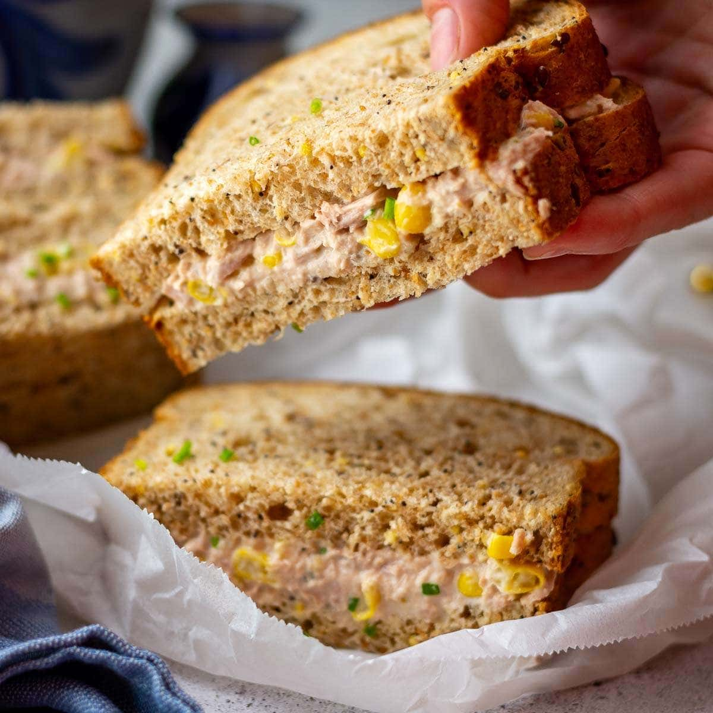

Tuna and sweetcorn sandwich

Description
A quick to make delicious sandwich for on the go
Ingridients
- 2 Slices of bread
- 1 Can of tuna
- 1 Can of sweetcorn
- A bit of mayo if you fancy
Steps
- Mix tuna sweetcorn and mayo (if you wish)
inside a small bowl or container
- Spread your mix on the bread
- Slice diagonally for a better look
- Enjoy !